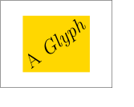

Object types¶
Ipe supports five different types of objects that can be placed on a page, namely path objects (which includes all objects with a stroked contour and filled interior, such as (poly)lines, polygons, splines, splinegons, circles and ellipses, circular and elliptic arcs, and rectangles), text objects, image objects, group objects, and reference objects (which means that a symbol is used at a certain spot on the page).
Path and text objects are created by clicking the left mouse button somewhere on the canvas using the correct Ipe mode. Group objects are created using the Group function in the Edit menu. Image objects are added to the document using Insert image in the File menu. Reference objects can be created either using mark mode, or using the Symbols ipelet.
Path objects¶
Path objects are defined by a set of subpaths, that is, curves in the plane. Each subpath is either open or closed, and consists of straight line segments, circular or elliptic arc segments, parabola segments (or, equivalently, quadratic Bézier splines), cubic Bézier splines, and cubic B-spline segments. The curves are drawn with the stroke color, dash style, and line width; the interior of the object specified is filled using the fill color.
The distinction between open and closed subpaths is meaningful for stroking only, for filling any open subpath is implicitely closed. Stroking a set of subpaths is identical to stroking them individually. This is not true for filling: using several subpaths, one can construct objects with holes, and more complicated pattern. The filling algorithm is normally the even-odd rule of Postscript/PDF: To determine whether a point lies inside the filled shape, draw a ray from that point in any direction, and count the number of path segments that cross the ray. If this number is odd, the point is inside; if even, the point is outside.
Ipe can draw arrows on the first and last segment of a path object, but only if that segment is part of an open subpath.
There are several Ipe modes that create path objects in different ways. All modes create an object consisting of a single subpath only. To make more complicated path objects, such as objects with holes, you create each boundary component separately, then select them all and use the Compose paths function in the Edit menu. The reverse operation is Decompose path, you find it in the context menu of a path object that has several subpaths.
You can also create complicated paths by joining curves sequentially. For this to work, the endpoint of one path must be (nearly) identical to the begin point of the next—easy to achieve using snapping. You select the path objects you wish to join, and call Join paths in the Edit menu. You can also join several open path objects into a single closed path this way.
Circles can be entered in three different ways. To create an ellipse, create a circle and shear or stretch and rotate it. Circular arcs can be entered by clicking three points on the arc or by clicking the center of the supporting circle as well as the begin and end vertex of the arc. They can be filled in Postscript/PDF fashion, and can have arrows. You can stretch a circular arc to create an elliptic arc.
A common application for arcs is to mark angles in drawings. The snap keys are useful to create such arcs: set arc creation to center & 2 pts, select snap to vertex and snap to boundary, click first on the center point of the angle (which is magnetic) and click then on the two bounding lines.
There are two modes for creating more complex general path objects. The difference between line mode and polygon mode is that the first creates an open path, the latter generates a closed one. As a consequence, the line mode uses the current arrow settings, while the polygon mode doesn’t.
The path object created using line or polygon mode consists of segments of various types. The initial setting is to create straight segments. By holding the shift-key when pressing the left mouse button one can switch to splines. Ipe offers three different kinds of splines: uniform B-splines, cardinal splines, and clothoid splines. You can select the type of spline in the Properties menu. Quadratic and cubic Bézier spline segments can be created as special cases of uniform B-splines with three and four control points.
Circular arcs can be added as follows: Click twice in polyline mode, once on the starting point of the arc, then on a point in the correct tangent direction. Press the a key, and click on the endpoint of the arc.
To make curves where segments of different type are joined with identical tangents, you can press the y key whenever you are starting a new segment: this will set the coordinate system centered at the starting point of the segment, and aligned with the tangent to the previous segment.
For the mathematically inclined, a more precise description of the segments that can appear on a subpath follows.
A subpath consists of a sequence of segments. Each segment is either a straight line segment, an elliptic arc, or a spline of one of the three supported types.
Note that a uniform B-spline with only three control points will be drawn as a quadratic Bézier spline. A B-spline with four control points is by definition a cubic Bézier spline.
The quadratic Bézier spline defined by control points \(p_{0}\), \(p_{1}\), and \(p_{2}\), is the curve
\(P(t) = (1-t)^{2} p_{0} + 2t(1-t) p_{1} + t^{2} p_{2}\),
where \(t\) ranges from 0 to 1. This implies that it starts in \(p_{0}\) tangent to the line \(p_{0}p_{1}\), ends in \(p_{2}\) tangent to the line \(p_{1}p_{2}\), and is contained in the convex hull of the three points. Any segment of any parabola can be expressed as a quadratic Bézier spline.
For instance, the piece of the unit parabola \(y = x^{2}\) between \(x=a\) and \(x=b\) can be created with the control points
\(p_{0} = (a, a^{2})\)\(p_{1} = (\frac{a + b}{2}, ab)\)\(p_{2} = (b, b^{2})\)
Any piece of any parabola can be created by applying some affine transformation to these points.
The cubic Bézier spline with control points \(p_{0}\), \(p_{1}\), \(p_{2}\), and \(p_{3}\), is the curve
\(R(t) = (1-t)^{3}p_{0} + 3t(1-t)^{2} p_{1} + 3 t^{2}(1-t) p_{2} + t^{3} p_{3}\).
It starts in \(p_{0}\) being tangent to the line \(p_{0}p_{1}\), ends in \(p_{3}\) being tangent to the line \(p_{2}p_{3}\), and lies in the convex hull of the four control points.
Uniform cubic B-splines approximate a series of \(n\) control points \(p_{0}\), \(p_{1}\), …, \(p_{n-1}\), \(n \geq 3\), with a curve consisting of \(n-3\) cubic Bézier splines, see, for instance, Sederberg 1. To clamp the spline to the first and last control point, the first and last knot are repeated three times. If the curve is closed (a splinegon), there is no clamping and \(n\) control points define \(n\) Bézier splines.
Since each point on a Bézier curve is a convex combination of the four control points, the curve segment lies in the convex hull of the control points. Furthermore, any affine transformation can be applied to the curve by applying it to the control points. Note that a control point has influence on only a few Bézier segments, so when you edit a spline object and move a control point, only a short piece of the spline in the neighborhood of the control point will move.
A cardinal spline is an interpolating spline—unlike a uniform B-spline, it will go through the control points. Ipe converts a sequence of \(n\) control points into \(n-1\) Bézier segments, each starting and ending at a control point. The tangent at each control point is parallel to the segment connecting the previous and the next control point.
Finally, a clothoid spline (spline type spiro) is created by
solving an optimization problem that tries to minimize the change in
curvature (so they look much “rounder” and are generally more
pleasing). Details can be found in Raph Levien’s thesis.
Existing polygonal objects can be edited, using Ipe’s edit mode. You select the object you want to modify, and then press M-e (or select ). The object will be placed in edit mode.
- 1
Thomas Sederberg, Computer-Aided Geometric Design, Chapter 6.
Text objects¶
Text objects come in two flavors: simple labels, and minipages. There are two variants of these: titles (a label that serves as the title of the page), and textbox (a minipage that spans the entire width of the page).
The position you have to click to start creating a label object is normally the leftmost baseline point (but this can be changed by changing the object’s horizontal and vertical alignment). A popup window appears where you can enter Latex source code.
A minipage object is different from a simple text object in
that its width is part of its definition. When you create a minipage
object, you first have to drag out a horizontal segment for the
minipage. This is used as the top edge of the minipage—it will
extend downwards as far as necessary to accomodate all the text.
Minipages are formatted using, not surprisingly, Latex’s
minipage environment. Latex tries to fill the given bounding
box as nicely as possible. It is possible to include center
environments, lemmas, and much more in minipages.
To create a textbox object, simply press F10. Ipe automatically places the object so that it spans the entire width of the page (the layout settings in the stylesheet determine how much space is left on the sides), and places it vertically underneath the textboxes already on the page. This is particularly convenient for creating presentations with a lot of text, or with items that appear one by one.
Title objects are managed by Ipe automatically. They are special labels that are created using Edit title & sections in the Page menu. Their color, size, alignment, and position on the page is determined by the stylesheet.
You can use any LaTeX-command that is legal inside a \makebox (for
labels) or inside a minipage (for minipages). You cannot use
certain commands that involve a non-linear translation into PDF. In
particular, you cannot use commands to generate hyperlinks (the
\href command from the hyperref package will not work). If
you need to add links to your Ipe document, you will need to use a
group object.
You can use color in your text objects, using the \textcolor
command, like this:
This is in black. \textcolor{red}{This is in red.} This is in black.
All the symbolic colors of your current stylesheet are also available
as arguments to \textcolor. You can also use absolute colors,
for instance:
This is in black. \textcolor[rgb]{1,1,0}{This is in yellow.} This is in black.
If you need LaTeX-commands that are defined in additional LaTeX
packages, you can include (\usepackage) those in the LaTeX
preamble, which can be set in Document properties in the Edit
menu.
Note that the xcolor-package is loaded automatically by Ipe,
without any options. If you need to use package options of the
xcolor-package, place the command
\ipedefinecolors{options}
in your preamble. It has to go before the first use of xcolor
commands in your document.
After you have created or edited a text object, the Ipe screen display will show the beginning of the Latex source. You can select Run Latex from the File menu to create the PDF representation of the object. This converts all the text objects in your document at once, and Ipe will display a correct rendition of the text afterwards.
Most Ipe users turn on Automatically run Latex in the File menu. If this is activated, Ipe will run Latex in most situations where a text object or a style has changed and the text representation needs to be updated. There are some exceptions, for instance undo and redo—just press Ctrl-L to run Latex manually.
If the Latex conversion process results in errors, Ipe will automatically show you the log file created by the Latex run. If you cannot figure out the problem, look in the section on troubleshooting.
You can use Unicode text, such as accented characters, Greek, Cyrillic, Chinese, Japanese, or Korean, in your text objects, once you have set up the necessary style files and fonts.
When Ipe computes the bounding box for a piece of text, it relies
entirely on the dimensions that Latex provides. Sometimes glyphs are
larger than their official dimensions, and as a result this
bounding box is too tight. In the following figure, A and G
stick out of the golden rectangle (the bounding box computed by Ipe
based on the Latex dimensions) at the top, y sticks out at the
bottom:
When you experience that text in your figures is clipped, you may have
to enlarge the figure’s bounding box using a BBOX layer.
The opposite problem can occur when you use transformed text. Ipe computes the bounding box for the transformed text by transforming the bounding box for the original text, and the result can be too large:
If this is a problem, you can put the text object inside a group and set a clipping path for the group.
Image objects¶
Images are inserted using Insert image (in the File menu). Once in a drawing, you can scale, stretch, shear, and rotate an image. You can read in some scanned drawing and draw on top of it within Ipe. This is useful if you have a drawing on paper and want to make an Ipe version of it.
Insert image can handle images in JPEG and PNG format (and possibly others such as GIF, BMP, TIFF, depending on the operating system). JPEG images are stored as is (PDF supports the JPEG standard), all other images are stored as a (compressed) bitmap, with full-color resolution (24 bits per pixel).
It is also possible to simply paste an image into Ipe (this should not be used for JPEG images, as you would then store the bitmap without JPEG compression).
Images are stored efficiently in PDF format. It is reasonable to create PDF presentations with lots of JPEG photographs in Ipe.
Group objects¶
Group objects are created by selecting any number of objects and using the Group function from the Edit menu. The grouped objects then behave like a single object. To modify a group object, it has to be decomposed into its parts using Ungroup.
Clipping¶
You can set a clipping path for a group. The group will then be clipped to this path—nothing will be drawn outside the clipping path. This is useful, for instance, to clip out an interesting part of an existing drawing or bitmap.
To add a clipping path, select a group as the primary selection, and a path object as the secondary selection. Then select Add clipping path from the group’s context menu.
Decorations¶
Group objects can be decorated. A decoration consists of one or more path objects that are drawn around the group. The decoration is automatically resized to fit the bounding box of the group.
To use decorations, you first need to add a stylesheet to your document that defines decoration symbols—you may want to start with the provided style sheet decorations.isy. Then use the group’s object menu to choose a decoration for the group.
Editing text in group¶
Groups often contain some text. For instance, a graph vertex is nicely represented as a group consisting of a text label and either a mark symbol such as a disk, or a path object (a circle, rectangle, or a more complicated shape). When drawing a graph, one can place the vertices by copying and pasting these vertex objects, but then one needs to set the text label in each vertex.
To make this easy, the Edit object operation (which is otherwise used to edit the text in text objects and the shape of path objects) can also be used for group objects that contain at lease one text object. It allows you to update the text inside the top-most text object of the group.
Recursive group edit¶
Often you want to modify the contents of a group without disturbing the rest of your drawing. To make this easy, Ipe provides the Edit group operation, available either from the Edit menu or from the group’s context menu.
Group editing is implemented by un-grouping the group into a newly created layer whose name will start with EDIT-GROUP. Ipe locks all other layers, so that you can concentrate on editing the objects in the group. When you are done, you select End group edit from the Edit menu. Ipe will take all the objects in the group edit layer, group them together, and place the group back in its original layer.
You can edit groups recursively: If your group contains another group that you want to modify, you can perform another group edit operation. Each End group edit closes one group edit layer, until you return to your normal drawing workflow.
Group edit is not a special mode—all the state needed by Ipe to manage editing the group is stored inside the drawing. This means that you can save your drawing during a group edit (also, auto-saving works during a group edit). If you have a document with multiple pages, you can also start group edits on several pages in parallel, for instance to copy and paste objects between groups.
It is legal to unlock the other layers of the page so that you can move objects into and out of the group. You should, however, be careful with changing anything about the layers of the page—do not re-order or rename the layers. If you need new layers, create them at the end of the layer list.
When you perform the End group edit operation, the group edit layer must be the active layer. If you changed the active layer, you will have to change it back to be able to return from the group edit.
Note that group edit does not currently preserve a clipping path set on the group. It does preserve the group’s decoration and link destination.
Links to websites, videos, and other pages¶
Group objects allow you to create active links: when the PDF document is viewed in a PDF viewer, one can click inside the bounding box of the group to cause some action.
You add a link to a group by bringing up the object menu, and using Set link URL. Note that only top-level group objects on a page (that is, a group object that is not inside another group) are turned into active links.
Ipe supports several types of link actions:
Websites
If you provide a URL such as http://ipe.otfried.org as a link
action, then clicking on the link will open the webpage in a web
browers.
Launching media
If the link action starts with launch:, then the action starts a
program to view the given file. For instance, the link action
launch:apollo17.avi would start a video player playing the file
apollo17.avi in the directory that also contains the PDF file.
The PDF presentations apps Presentation and pdfpc understand these links, and play the video inside the presentation app. Pdfpc will even embed the video into the current slide, using the bounding box of the group object to place the video.
Pdfpc allows you to provide a few more parameters: for instance, the link action
launch:apollo17.avi?autostart&loop&start=5&stop=12
will start the movie as soon as the slide is viewed, plays the movie in a loop, starting at 5 seconds and ending at 12 seconds into the movie.
You can also launch other types of documents. For instance, clicking
on a group object with link action launch:summary.txt will open
the text file summary.txt in a text editor.
Navigating inside the document
If the link action starts with goto:, then clicking on the group object will navigate to another page of the same PDF document. You identify pages using their section name. So if you have a page with section name chapter3 in your document, then the link action goto:chapter3 will jump to that page.
Standard actions
PDF currently defines four standard actions: NextPage, PrevPage, FirstPage, and LastPage. You use these by prefixing them with named:. For example, the link action named:PrevPage creates an action to go to the previous page. This can be used, for instance, to place buttons in a background layer that appears on every page of a document.
Reference objects and symbols¶
A symbol is a single Ipe object (which can of course be a group) that is defined in a document’s stylesheet. A reference object is a reference to a symbol, placed at a given position on the page.
Symbols can be parameterized with stroke and fill color, pen width,
and symbol size. Whether or not a symbol accepts which parameter is
visible from the symbol’s name: if it takes any parameter, the name
must end in a pair of parentheses containing some of the letters
s, f, p, x (in this order), for the parameters stroke,
fill, pen, and size. References to parameterized symbols allow all
the attributes that the symbol accepts.
All references can be translated around the page. Whether or not the symbol can be rotated or stretched depends on the definition of the symbol in the stylesheet.
If a symbol named Background exists in your stylesheet, it is
automatically displayed on each page, at the very back. To suppress
the automatic display, create a layer named BACKGROUND on the
page. (If such a layer is present, it suppresses the Background
symbol. It does not matter if the layer itself is visible or not.)
Marks are symbols with special support from the Ipe user interface. They are used to mark points in the drawing, and come in several different looks (little circles, discs, squares, boxes, or crosses). You can define your own mark shapes by defining appropriate symbols in your stylesheet.
Note that marks behave quite different from path objects. In particular, you should not confuse a disc mark with a little disc created as a circle object:
a solid mark (type disk and square) only obeys the stroke color (but fdisk and fsquare marks are filled with the fill color);
when you scale a mark, it will not change its size (you can change the mark size from the properties panel, though);
when you rotate a mark, it does not change its orientation.
You can change a mark’s shape and size later.